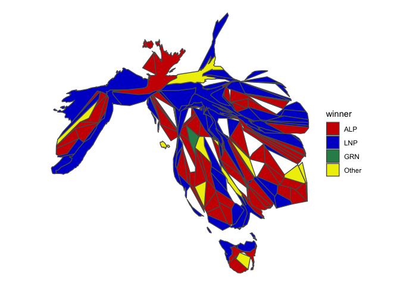
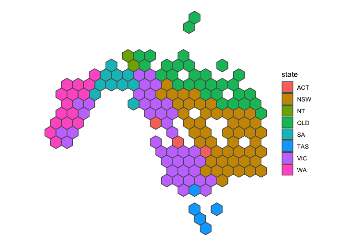

The hexmap R package aims to automate the conversion of geospatial polygons into hexagonal grids. This conversion allows users to better visualise statistical values associated with each geospatial region.
Installation
You can install the development version of hexmap like so:
install.packages("remotes")
remotes::install_github("numbats/hexmap")Method
- Make a cartogram so that each region has an approximately equal area (optional)
- Create a hexagonal grid based on this cartogram or other geospatial object
- Assign the region to the “closest” hexagon
Example: Australian federal election 2022
library(hexmap)
library(sf)
library(cartogram)
library(ggplot2)
library(dplyr)
set.seed(1)
winner_map <- function(data) {
party_colors <- c("ALP" = "red3", "LNP" = "blue3", "GRN" = "seagreen", "Other" = "yellow2")
ggplot(data) +
geom_sf(aes(fill = winner)) +
theme_void() +
scale_fill_manual(values = party_colors)
}
state_map <- function(data) {
ggplot(data) +
geom_sf(aes(fill = state)) +
theme_void()
}The data aec2022 in hexmap is an sf object with a simplified Australian federal electoral boundary and the corresponding party that won the 2022 Australian federal election for that electoral division.

Cartogram
aec2022carto <- aec2022 %>%
st_transform(crs = "+init=epsg:3112") %>%
mutate(weight = 1) %>%
cartogram_cont("weight", itermax = 50)
winner_map(aec2022carto)
state_map(aec2022carto)
geogrid hexagonal map
hex <- geogrid::calculate_grid(aec2022carto, grid_type = "hexagonal")
res <- geogrid::assign_polygons(aec2022carto, hex)
state_map(res)
Related
-
geogridpackage